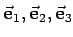
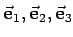
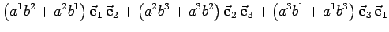

Inhalt Index DeskTop Bronstein

 Geometrie Vektoralgebra und analytische Geometrie Vektoralgebra Mehrfache multiplikative Verknüpfungen
Geometrie Vektoralgebra und analytische Geometrie Vektoralgebra Mehrfache multiplikative Verknüpfungen


Wenn die affinen Koordinaten zweier Vektoren  und
und  im System  bekannt sind, so daß
im System  bekannt sind, so daß
| (3.289) |
gegeben sind, dann müssen zur Berechnung des skalaren Produkts
| + | |||
| + |  | (3.290) |
letzteres mit
| (3.291b) |
die paarweisen Produkte der Koordinatenvektoren bekannt sein. Für das skalare Produkt sind das die sechs metrischen Koeffizienten (Zahlen)
| (3.292a) |
| (3.292b) |
und für das Vektorprodukt die drei Vektoren
 |
(3.293a) |
genauer die drei reziproken Vektoren bezüglich wobei der Koeffizient
| (3.293b) |
der gleich dem gemischten Produkt der Koordinatenvektoren ist, lediglich einer kürzeren Schreibweise in weiteren Formeln dient. Mit Hilfe der folgenden Multiplikationstabellen für die Grundvektoren wird das Arbeiten mit den Koeffizienten übersichtlicher.
Die kartesischen Koordinaten sind ein Spezialfall der affinen Koordinaten. Aus den folgenden zwei Tabellen ergeben sich für
| (3.294a) |
| (3.294b) |
| (3.294c) |
Somit stimmen die reziproken Grundvektoren mit den Grundvektoren des Koordinatensystems überein, oder anders ausgedrückt, in kartesischen Koordinaten sind die Grundvektorensysteme zu sich selbst reziprok.
Für kartesische Koordinaten geht diese Gleichung in (3.286) über.
Nach dem zweiten Gleichheitszeichen wurde die in der Tensorrechnung übliche abkürzende Schreibweise für Summen verwendet: Anstelle der gesamten Summe wird nur ein typisches Glied hingeschrieben, so daß über alle doppelt auftretenden Indizes dieses Gliedes zu summieren ist, d.h. über alle einmal unten und einmal oben auftretenden Indizes. Manchmal werden die Summationsindizes mit griechischen Buchstaben bezeichnet; hier durchlaufen sie die Zahlen 1 bis 3. Es gilt also
| = | g11a1b1 + g12a1b2+ g13a1b3+g21a2b1+g22a2b2+g23a2b3 | ||
| (3.296) |
In Übereinstimmung mit (3.291a) gilt
| = | (3.297) | ||
| = | (3.298) |
In Übereinstimmung mit (3.291a) ergibt sich
Für rechtwinklige kartesische Koordinaten geht diese Gleichung in (3.288) über.